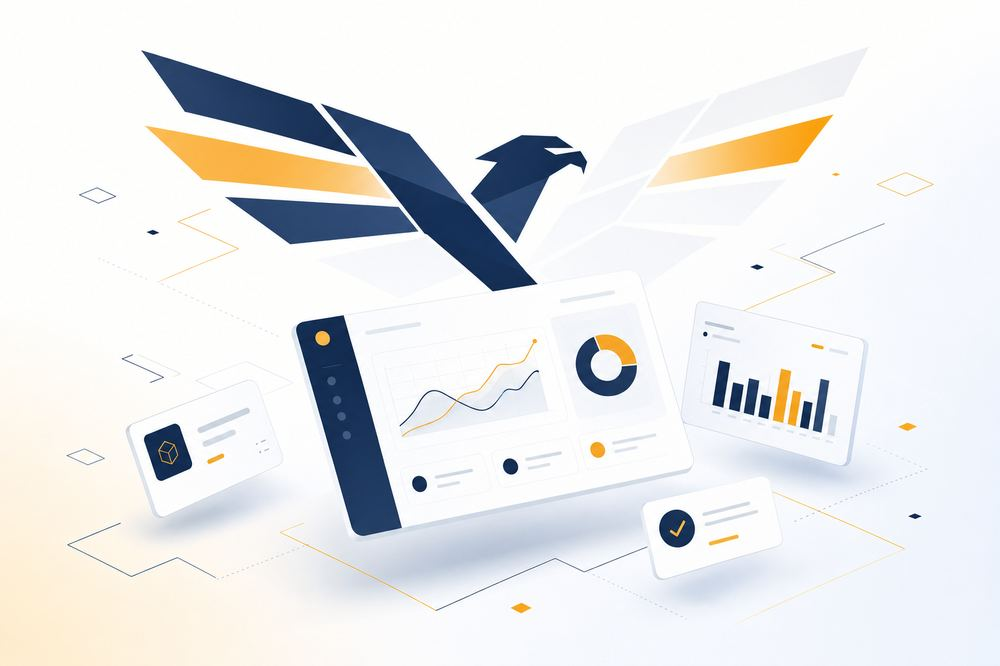

Software su misura
Applicazioni e strumenti sviluppati da zero attorno alle esigenze reali della tua attività.
Sono Nello Montaquila, freelance specializzato in software e prodotti digitali. Progetto strumenti semplici, solidi e su misura per aiutarti a lavorare con più efficienza, precisione e libertà.

Dalla piccola automazione al software su misura: ogni soluzione nasce da un problema reale, non da un modello preconfezionato.
Applicazioni e strumenti sviluppati da zero attorno alle esigenze reali della tua attività.
Riduco le attività ripetitive con automazioni e integrazioni tra gli strumenti che usi già.
Template, plugin e mini-tool pronti all'uso per chi vuole risultati rapidi e affidabili.
Analizzo il tuo flusso di lavoro e ti indico dove la tecnologia può davvero fare la differenza.
Che tu abbia già un'idea precisa o solo un problema da risolvere, si parte sempre da una conversazione.
Un tool digitale mirato a risolvere un problema specifico del tuo lavoro quotidiano.
da 800 €
Software o piattaforma digitale progettata e sviluppata interamente attorno alla tua attività.
da 3.500 €
Aggiornamenti, nuove funzionalità e assistenza continua per far crescere lo strumento nel tempo.
da 90 € al mese
Mi scrivi cosa ti serve o cosa non funziona nel tuo flusso di lavoro attuale.
Ti presento una soluzione concreta, con tempi e costi definiti, senza sorprese.
Progetto e realizzo lo strumento, con aggiornamenti regolari sull'avanzamento.
Ricevi il tuo strumento pronto all'uso, con assistenza per i primi passi.
Aquilix nasce per rendere la tecnologia uno strumento accessibile e affidabile per chiunque voglia far crescere la propria attività.
La nostra missione è progettare strumenti digitali semplici, solidi e su misura, che permettano a professionisti e piccole imprese di lavorare con più efficienza, precisione e libertà, senza mai perdere di vista l'affidabilità.
Ogni progetto parte da un ascolto attento: capisco prima il tuo modo di lavorare, poi costruisco lo strumento giusto, senza soluzioni preconfezionate.
Progetti veri, non concept. Ogni scheda dice a che punto è: realizzato per un cliente, online, demo o prototipo.
Un portale unico dove i clienti dello studio gestiscono fatture elettroniche, documenti fiscali e scadenze, chiedono assistenza e acquistano i pacchetti di servizi. Calcola anche la stima di tasse e contributi per chi è in regime forfettario.
Le aziende clienti inviano assenze e straordinari dal portale, anche caricando un file Excel, invece di mandarli per email. Lo studio li controlla e li esporta in un file pronto per Paco. Documenti mensili per aziende e dipendenti, con vista da smartphone per i dipendenti.
Clienti, pratiche e scadenze in un'unica schermata, al posto di cartelle e appunti sparsi: rinnovi di PEC, SPID e firma digitale in arrivo, pratiche ferme da troppi giorni, documenti ancora da chiedere al cliente.
Clienti, bandi e pratiche in un solo posto: abbinamento automatico tra clienti e bandi adatti, compilazione guidata dei documenti e una bacheca per seguire ogni pratica dall'inizio alla fine.
Simulatore di punteggio per personale ATA e docenti: anni di servizio, titoli e abilitazioni. Con orientamento sui percorsi universitari e abilitanti in CFU e notizie sulla scuola pronte da condividere su Facebook.
Trova bandi, incentivi e contributi a fondo perduto adatti al profilo di imprese e privati, senza passare ore sui siti istituzionali.
Per chi affitta casa a breve termine: importa le prenotazioni dai portali, prepara i file per le comunicazioni obbligatorie sugli ospiti e calcola la tassa di soggiorno del mese.
Gestione progetti per agenzie digitali: clienti, siti, funnel e SaaS in un unico pannello, con accessi per più persone e statistiche di visite e conversioni per ogni progetto.
E-commerce di cialde e capsule con un selettore guidato che trova quelle compatibili con il modello della tua macchina, e abbonamenti per ricevere le consegne in automatico.
Un solo annuncio pubblicato su eBay, Vinted, Wallapop e Subito: testi e prezzi adattati a ogni piattaforma, commissioni e guadagno netto calcolati, storico di cosa hai venduto e dove.
Per chi cura i profili LinkedIn dei clienti: questionario iniziale, profilo ottimizzato con punteggio, post e articoli generati da modelli e calendario di pubblicazione con approvazione del cliente.
Pagina di vendita per un corso in presenza sull'uso dell'intelligenza artificiale nel lavoro, realizzata con CS Form: un messaggio chiaro e una sola chiamata all'azione.
Il cervello aziendale di Aquilix: tutta la conoscenza dell'attività in note collegate tra loro, con una ricerca che gira sul computer e risponde solo con quello che c'è scritto, senza inventare.
Software su misura, automazioni tra strumenti esistenti e piccoli prodotti digitali pensati per semplificare attività ripetitive. Ogni progetto viene valutato singolarmente in base alle esigenze reali.
Dipende dalla complessità: uno strumento mirato può richiedere pochi giorni, un progetto completo alcune settimane. Ti fornisco sempre una stima chiara prima di iniziare.
Sì. Ogni progetto include un periodo di assistenza post consegna e puoi scegliere un piano di manutenzione continuativa se hai bisogno di aggiornamenti regolari.
Mi scrivi una breve descrizione del problema o dell'idea. Ci parliamo per capire obiettivi e priorità, poi ricevi una proposta scritta con tempi e costi.
Raccontami la tua attività: insieme troviamo lo strumento digitale giusto per farla crescere.